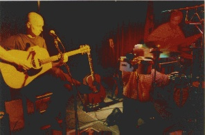

Home Artist links Label link
Trusties - Growing Smaller
| Artist: | Trusties |
| Title: | Growing Smaller |
| Label: | PUUCD - 1997 |
| Length(s): | 52 minutes |
| Year(s) of release: | 1997 |
| Month of review: | 11/1998 |
Line up
Matti Yuauri - lead vocals, tambourine, rhythm egg, triangle, rainstick, djembe, cowbell, bass drum, grandfather clock, rhythm stick, pumping.
Marko Oikarinen - guitars, vocals, cymbals, hi-hat, djembe, bongo, cowbell, triangle, tom-toms
Ville Veijalainen - bass, vocals, clarinet, pump organ, guitar, quiro, triangles
All instruments are played acoustically, even the electric basses.
Tracks
| 1) | Sounds Of Life | 5.34
|
| 2) | Dream Of 3 | 3.03
|
| 3) | His Blue Sky | 4.15
|
| 4) | Away | 3.05
|
| 5) | Morning Light | 3.33
|
| 6) | Why? | 3.48
|
| 7) | Come | 4.06
|
| 8) | Faraway | 3.34
|
| 9) | Lady Sun | 3.54
|
| 10) | Comanchio | 3.19
|
| 11) | Mother Earth | 4.05
|
| 12) | Goodbye | 4.58
|
| 13) | Further Away | 4.31
|
Summary
Hailing from Finland this is a band totally unknown to me, but they're
on the web so go and take a look if the story below is to your liking.
The music
This is not your typical prog, it may not even be rock. Sounds Of Life
opens with clarinet, but for the most part this song is slightly accented
singing, acoustic guitar often played in a percussive way, reminding me
of that obscure band, The Origin. The chorus is quite jolly, the lyrics
about somebody not wanting to be anything in our everyday society. With
5.34 this is also the longest track on the album.
Dream Of 3 is more up-beat, quite fast paced with repetitive sounding
acoustic guitar, a nice bubbling bass over which the singer(s) sing
their lyrics. The acoustic solo sounds slightly Middle-eastern.
His Blue Sky is more folky, again quite fast-paced. It features, as an extra,
the marimba of guest musician Matti Oikarinen. Away is comparable to
Dream Of 3, but sounding somewhat more dreamy, later in the track the folk
makes its entrance again and the boys sing some nice harmonies.
Morning Light opens soothingly and features some great clarinet: the tones
are really stretched out at times yielding at times a hairraising effect.
Why? has a striking vocal melody with some nice effects such as a quiro.
Then we get a soft and subtle intermezzo with dreamy vocals.
A great track showing quite some development during the track.
Come is a pastoral, repetitive track, slowly developing with all kinds of
sounds interleaving. The instrumental intermezzo is quite loud with
strumming guitars, bass drum and spacious clarinet? Then the peace returns.
Faraway is again once of those "faraway" sounding tracks, dreamy, subtle and
peaceful, as is Lady Sun. It often happens that during the singing the
accents on the words are quite different from what one expects in English;
poetic freedom I guess. After Comanchio we come to the Spanish sounding
Mother Earth. I hope Goodbye should open in mono, but after a few bars,
we back into stereo. The chorus is quite untypical, seemingly slightly
vocoded. As always the melodies are very good.
Closing down is Further Away with some beautiful clarinet.
Conclusion
Not your average progressive fair. They advertise themselves as the new
sound of wood, and in fact all music is non-electrified on this disc.
The vocals and lyrics are certainly okay, though the former are slightly
Finnified, it is not disturbing. The sound of the album is very good and
clear and there's a great diversity of instruments. Melodically this is
actually a great disc, and because the music is not really loud it is good
to notice tht you can really follow what is happening. Having said this,
you might get the impression that I like this disc and I do, but with
progressive rock it does not have much to do. On the other hand, although
acoustic and at times folky, the music is nowhere close to boring and
actually a very pleasant listening enterprise, ranging from up-tempo folk
to pastoral, soothing soundscapes. No music to vacuumclean your house on,
but to just lay or sit down and relax a bit.

© Jurriaan Hage